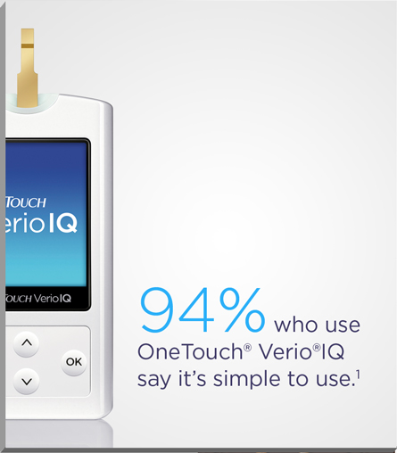
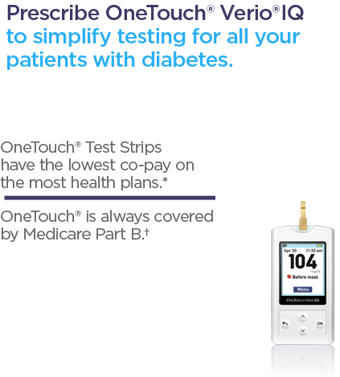

*Some health plans may have more tha one brand available at
the lowest co-pay.
†Co-Insurance, deductible, and eligibility may apply.
1. Data on file. OneTouch® Verio®IQ U.S. Patient Tracker (Aug 2012-Jan 2013):25 N=665 current OneTouch® Verio®IQ users. LifeScan, Inc. 2013.
†Co-Insurance, deductible, and eligibility may apply.
1. Data on file. OneTouch® Verio®IQ U.S. Patient Tracker (Aug 2012-Jan 2013):25 N=665 current OneTouch® Verio®IQ users. LifeScan, Inc. 2013.